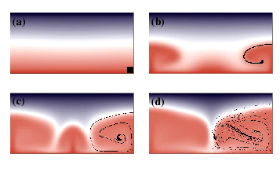
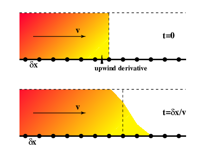

Survey of numerical methods¶
Explicit versus implicit methods}¶
The use of implicit solution methods is crucial when we come to the mantle flow problem (and to elasticity). It is a deceptively simple concept which we use to eliminate oscillatory errors and other problems associated with stiff systems, and in other cases where we want to take large timesteps. Again, Numerical Recipes provides a good example of the way in which implicit methods avoid the shuffling timesteps which result when an otherwise unimportant component of the system blows up. To obtain an implicit solution, we express our updated timestep in terms of values of derivatives etc which are evaluated at that timestep. This may result in dependencies which mean large systems of simultaneous equations need to be solved.
But our simple example can also be solved implicitly as follows
Easy to write down, but \(\left. d \theta/ dt \right|_{t+\Delta t}\) is not known until \(\theta(t+\Delta t)\) is known. In this case, however, we simply substitute \(\left. d \theta/ dt \right|_{t+\Delta t}= -k \theta(t+\Delta t)\) from the differential equation and write
A higher order implicit method can be found by considering how the second order Runge-Kutta method constructs its estimates. In place of the first order approximation above, we try
where we assume
Substituting from our original differential equation now gives
t |
\(^1\theta_i\) |
\(^2\theta_i\) |
Exact |
|---|---|---|---|
0.0 |
1.0000 |
1.0000 |
1.0000 |
0.1 |
0.9091 |
0.9048 |
0.9048 |
0.2 |
0.8264 |
0.8186 |
0.8187 |
0.3 |
0.7513 |
0.7406 |
0.7408 |
0.4 |
0.6830 |
0.6701 |
0.6703 |
0.5 |
0.6209 |
0.6063 |
0.6063 |
[Results of the two implicit schemes derived above for the numerical integration of the decay equation][table-decay]
The first order scheme is of approximately the same accuracy as the explicit scheme, not surprisingly, but the mid-point implicit method has very impressive results considering that there is very little extra work involved in deriving the formulation. Can this strategy stabilize the quadratic expansion which proved to be so unstable in explicit form ?
Evaluating the derivatives at time \(t=(n+1)\Delta t\) gives
which we substitute into the differential equation at \(t=(n+1)\Delta t\) to give (eventually)
This method is stable although not as accurate as the second order Runge-Kutta Scheme. It is trivial to modify the Python script to demonstrate this.
Generalizing from the Simplest Example¶
We have learned a number of things — in particular
We have to know something about the governing equations of the system before modeling can proceed (i.e. a conceptual model, and then a mathematical model).
Before the equations can be solved in the computer, it is necessary to render the problem finite.
The discretization method chosen may not be effective for a particular problem. Numerical modeling can be an art since experience with different differential equations is often needed to avoid pitfalls.
The Problem with Advection¶
Advection is a fundamental concept in fluid mechanics, get it makes the lives of fluid dynamicists much more difficult. It can be particularly problematic in numerical modeling. This is worth having in mind when we discuss different numerical methods because in application to solid Earth dynamics, advection will be a major issue with any method we choose.

As we discussed previously in dealing with approximate analytic solutions, the solution to all our advection woes is to deal with a coordinate system locked to the fluid. Unfortunately, while this approach works well in some situations – predominantly solid mechanics and engineering applications where total deformation is generally no more than a few percent strain – in fluids, the local coordinate system becomes quite hard to track. In the figure above , a small, square region of fluid has been tagged and is followed during the deformation induced by a simple convection roll. It is clear that a coordinate system based on initially orthogonal sets of axes rapidly becomes unrecognizably distorted.
Advection, in the absence of any diffusion terms, represents a transport of information about the state of an individual parcel of fluid which is different from the state of its neighbours. For example, it might be a dye which tells us whether a parcel of fluid started in on half of the domain or the other. We are dealing with a chaotic system in the sense that parcels of material which start abitrarily close together will wind up exponentially far apart as time progresses. Thus, the dye will become ever more stretched and filamented without ever being mixed (at least in laminar flow).
If the dye can diffuse then, the finer scales of the tendrils will in fact be mixed because they are associated with enormous spatial gradients (e.g. compare this with boundary layers). If the dye cannot diffuse then the density of information needed to characterize the system increases without limit. Numerically this is impossible to represent since at some stage, the stored problem has to be kept finite. This can be imagined as an effective diffusion process, although it has an anisotropic and discretization dependent form. The rule of thumb, that arises from this observation is that the real diffusion coefficient must be larger than the numerical one if the method is to give a true representation of the problem.
Numerical Example in 1D¶

Let us follow our usual strategy an solve the simplest imaginable advection equation:
in which \(v\) is a constant velocity. Obviously we need to introduce some notation as a warm-up for solving the problem. We break up the spatial domain into a series of points separated by \(\delta x\) as shown and, as we did in the earlier examples, break up time into a discrete set separated by \(\delta t\). The values of \(\phi\) at various times and places are denoted by
where the \(i\) subscript is the \(x\) position and \(n\) denotes the timestep:
A simple discretization gives
For simplicity, we set \(v\delta t = \delta x /2\) and write
location |
||||||||
|---|---|---|---|---|---|---|---|---|
time |
i-2 |
i-1 |
i |
i+1 |
i+2 |
i+3 |
\(\int \phi dx\) |
|
Centred |
t=0 |
1 |
1 |
1 |
0 |
0 |
0 |
3 |
t=\(\delta x/2v\) |
1 |
1 |
1.25 |
0.25 |
0 |
0 |
3.5 |
|
t=\(\delta x/v \) |
1 |
0.938 |
1.438 |
0.563 |
0.0625 |
0 |
4.0 |
|
Upwind |
t=0 |
1 |
1 |
1 |
0 |
0 |
0 |
3 |
t=\(\delta x/2v\) |
1 |
1 |
1 |
0.5 |
0 |
0 |
3.5 |
|
t=\(\delta x/v \) |
1 |
1 |
1 |
0.75 |
0.25 |
0 |
4.0 |
[Hand calculation of low order advection schemes][hand-rolled-advection]
We compute the first few timesteps for a step function in \(\phi\) initially on the location \(x_i\) as shown in the diagram. These are written out in the first section of the Table. There are some oddities immediately visible from the table entries. The step has a large overshoot to the left, and its influence gradually propogates in the upstream direction. However, it does preserve the integral value of \(\phi\) on the domain (allowing for the fact that the step is advancing into the domain).
These effects can be minimized if we use “upwind differencing”. This involves replacing the advection term with a non-centred difference scheme instead of the symmetrical term that we used above.
Where we now take a difference only in the upstream direction.
The results of this advection operator are clearly superior to the centred difference version. Now the step has no influence at all in the upstream direction, and the value does not overshoot the maximum. Again, the total quantity of \(\phi\) is conserved.
Why does this apparently ad hoc modification make such an improvement to the solution ? We need to remember that the fluid is moving. In the time it takes to make the update at a particular spatial location, the material at that location is swept downstream. Consider where the effective location of the derivative is computed at the beginning of the timestep — by the end of the timestep the fluid has carried this point to the place where the update will occur. This has some similarity to the implicit methods used earlier to produce stable results.
Node/Particle Advection¶
Contrary to the difficulty in advecting a continuum field, discrete particle paths can be integrated very easily. For example a Runge-Kutta integration scheme can be applied to advance the old positions to the new based on the known velocity field. It is only when the information needs to be recovered back to some regular grid points that the interpolation degradation of information becomes important.
Courant condition¶
For stability, the maximum value of \(\delta t\) should not exceed the time taken for material to travel a distance \(\delta x\). This makes sense as the derivatives come from local information (between a point and its immediate neighbour) and information cannot propogate faster than \(\delta x / \delta t\). If the physical velocity exceeds the maximum information velocity, then the procedure must fail.
This is known as the Courant (or Courant-Friedrichs-Lewy) condition. In multidimensional applications it takes the form
where \(N\) is the number of dimensions, and a uniform spacing in all directions, \(\delta x\) is presumed.
The exact details of such maximum timestep restrictions for explicit methods vary from problem to problem. It is, however, important to be aware that such restrictions exist so as to be able to search them out before trouble strikes.
One of the ugliest problems from advection appears when viscoelasticity is introduced. In this case we need to track a tensor quantity (stress-rate) without diffusion or other distorting effects. Obviously this is not easy, especially in a situation where very large deformations are being tracked elsewhere in the system — e.g. the lithosphere floating about on the mantle as it is being stressed and storing elastic stress.
A Variety of Numerical Methods¶
We now discuss a number of different numerical solution techniques which are suitable for solid Earth dynamics problems. Obviously only a brief discussion of any one method is possible, and more methods are inevitably available.
As we have already seen, some methods work well for particular problem and others roll over and die with hardly any sign of impending doom. We need to know what the tools in our toolbox are for and what will cause them to break before we try to solve serious problems with them. After all, in uncharted territory, a numerical instability might look enticingly like an exiting new result.
Obviously there is not room to do justice to any particular method — or (god forbid) make some other method seem better than finite elements (though for some things this is obviously true).
Finite Differences¶
We are already familiar with finite differences. The examples we went through in the introductory material use the finite difference philosophy to represent derivatives by differences. We used only primitive versions of finite differences but the methodology is similar: a regular mesh-based discretization of time and space with differential equations being represented as difference equations.
Finite Difference methods are simple and can be very fast. They can be intuitively easy to understand and program and are also universally applied. They may encounter difficulties when extreme variations in properties occur from one grid point to another.
Finite Elements¶
Finite elements work from a variational principle (more, much more, later) which is an integral version of the governing equations. They work with a spatial discretization into a mesh spanned by elements with unknowns allocated to their vertices.
The application of finite elements to complex problems and those with very complex domains is a programmers joy since the entire methodology match object - oriented programming techniques. The flip-side of this is that the construction of the numerical equations which need to be solved may take considerably longer than the actual solution process.
The retention of the integral form can be beneficial for problems with difficult boundary conditions or discontinuities which can be integrated. Variational methods are, however, difficult to constrain particularly when iterative, implicit solution methods are used.
Finite Volumes¶
In finite volumes one combines some of the best features of finite elements and finite differences. The method is grid based and works with both the original mesh and its dual. The formulation starts with a weak form of the equations based on volume fluxes into the local volume surrounding a node (based on the dual mesh). These integrals are then converted via Gauss’ theorem, into surface integrals on the edges/faces of the dual mesh. Depending on the subsequent discretization, the resulting algorithm can be akin to finite differences or to finite elements (whether surface integrals remain in the formulation or are replaced by some differencing form) Advantages include the fact that the surface integral formulation can be tailored to satisfy local constraints without additional messing about thus making for very rapid solution times. The formulation can also deal with arbitrary mesh configurations. Disadvantages include a difficulty in applying some boundary conditions since the dual surface is not defined outside the mesh (formally).
Natural Elements¶
An extension of finite elements using the theory of Natural Neighbour interpolation schemes to provide shape functions for all grid point arrangements. A best (Delaunay) triangulation is defined for such a set of points and interpolation functions exist which give an optimal representation of the interpolant. These functions can provide a basis for a finite element scheme. Advantages include the fact that elements can be highly distorted but this does not affect the convergence of the method in the same catastrophic way as for normal schemes. Disadvantages include the fact that shape functions overlap other elements and therefore precise integration is difficult. Also this is a relatively novel method and there are some odds and ends to be ironed out.
Spectral (time/space)¶
We saw in the theoretical treatment of instabilities in a layer how beneficial it can be to deal with harmonic functions in one or more dimensions. This turns the problem from a partial differential equation into a set of ordinary differential equations for the different wavenumbers. The method works well for systems with homogeneous material properties otherwise spatial variations in these properties are couple the different wavenumbers together and add layer upon layer of complexity to the problem. Due to the existence of the fast fourier transform, these methods, when they can be applied, are potentially very quick. They are limited to relatively regular geometries, however.
Discrete Elements¶
Meshless methods which deal with either actual discrete systems such as large systems of granular materials or systems in which notional particles represent elements of the continuum. The method works by treating simple interactions of very many particles dynamically. For each particle an explicit solution of \(F=ma\) for translations and \(L=I\ddot{\theta}\) for the rotations is found in reponse to the interaction forces with every other particle. In discrete elements such interactions are usually local (e.g. only when particles are in contact) and this makes the system manageable in size. Very good for treatment of fracture and dynamic responses of granular systems but can be hampered by the time taken for the fully explicit nature of the algorithm, i.e. elastic waves must be resolved in order to model deformation. Also, these methods are based on particle interaction functions and so properties of the continuum such as viscosity are not direct inputs but have to be computed as an average response of the system (just like the real thing). Compare this to molecular dynamics simulations.
Smooth Particle Hydrodynamics¶
Another meshless method in which “particles” are the centres of smooth functions such as gaussians. These can be used to interpolate any field across the solution domain. They are also differentiable and can therefore represent differential equations relatively efficiently. Very useful for high velocity flows and astrophysics type problems. Historically there have been problems representing boundary conditions and viscosity so not ideal for the highly viscous and/or elastic type problems of the solid earth.
Particle in Cell methods¶
In these methods both particles and a mesh exist. The mesh supplies the velocities which move particles around, but the particles carry information with them in a Lagrangian sense. Derivatives are computed on the mesh using the values of nodal variables but material property variations are measured by the particles. Advantages include the fact that the method is geometrically simple for relatively complex deformations and uses a horses-for-courses approach with the mesh doing what it is best at - derivatives, fast solutions and the particles doing their part on the Lagrangian components of the problem. Major disadvantages include the fact that the particle properties and the mesh properties must be synchronized and this may involve some averaging to the mesh. Worse, there need to be more particles than grid points for the algorithm to work, but this means there are more particle degrees of freedom than can be constrained by the mesh — this means that multiple particle configurations can produce the same solution on the mesh some of which may be unstable and incapable of being damped during the solution.
Lagrangian/Eulerian meshes¶
As we hinted earlier, Lagrangian formulations eliminate convective terms from the equations but at the expense of geometrical complexity. Finite elements are not particularly troubled by complex meshes provided the elements do not become too distorted. Thus, for moderate deformations, advection of the grid points provides a simple way to eliminate the much more complicated advection terms from the differential equations. For fluids, however, the deformation ultimately ruins the ability of the mesh to converge on the correct solution and the results have to be interpolated to a new mesh, losing some accuracy as a result.
ALE¶
An alternative to this approach is to use ALE which is, sad to say, an acronym for Arbitrary-Lagrangian-Eulerian. The node points are advected but not at the same rate as the flow. This can be used to prevent mesh tangling while still mitigating the worst difficulties associated with the advection term. But, on the other hand, it hasn’t entirely eliminated that term.
DLR¶
A different method is to start with an optimal, Delaunay, triangulation and allow the grid points to move locked into the fluid so as to eliminate the convection term from the differential equation. The mesh connections are checked at each timestep to see if the triangulation is still optimal. From near-optimal to optimal in this way involves exchanging a few node connections. This continual updating avoids ever being in a situation where full remeshing is required and thus avoids the loss of information during that process. Additional nodes can be introduced to improve resolution where required. The disadvantage of this procedure is in tracking history variables such as stress rate. These are only defined on the element interiors not the nodes, so the result is the tracking of a somewhat smoothed quantity. (brought to you by the Natural Element people)